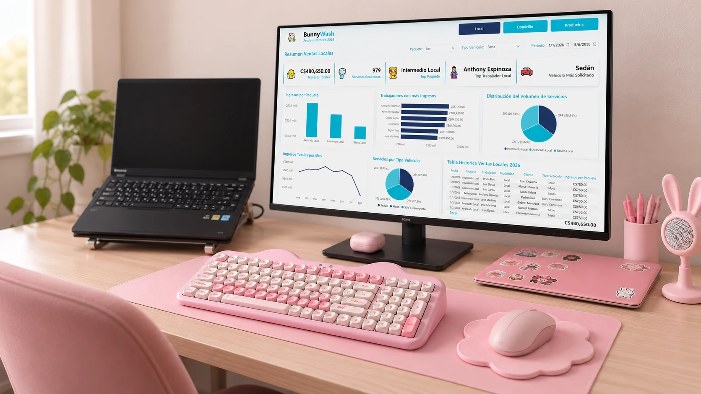

Soluciones digitales para hacer crecer tu negocio
Desarrollamos sitios web y software, organizamos tus datos y automatizamos procesos con soluciones a la medida de tu negocio.

Lo que podemos crear juntos
Seis áreas conectadas por un mismo propósito: ayudarte a avanzar.
Desarrollo Web
Tu negocio en la web, con una experiencia pensada para tus clientes.
02Análisis de Datos y Business Intelligence
Convierte información en decisiones claras para tu negocio.
03Digitación y Gestión de Datos
Organiza y transforma tu información para trabajar mejor.
04Automatización de Procesos
Simplifica tareas repetitivas y conecta tus herramientas.
05Bases de Datos
Construye una base sólida para tu información.
06Desarrollo de Software
Herramientas que se adaptan a la forma en que trabajas.
Tecnología con un enfoque cercano
Cada negocio tiene su propia forma de trabajar. Por eso partimos de tus necesidades para definir una solución útil, clara y alineada con tus objetivos.
Conoce cómo trabajamos →¿Tienes una idea? Hagámosla realidad.
Cuéntanos qué necesitas y definamos juntos el siguiente paso.